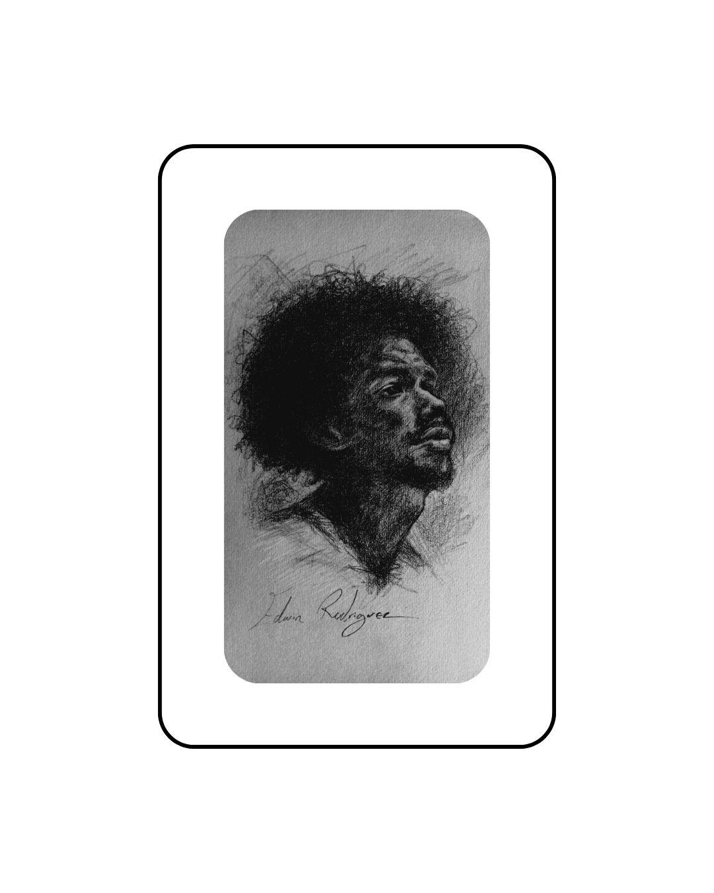
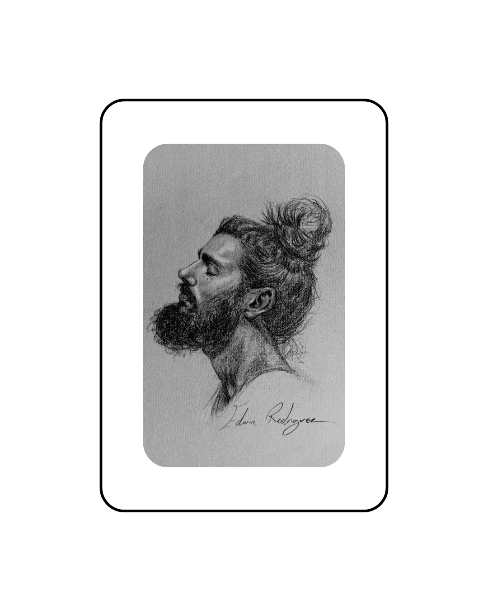
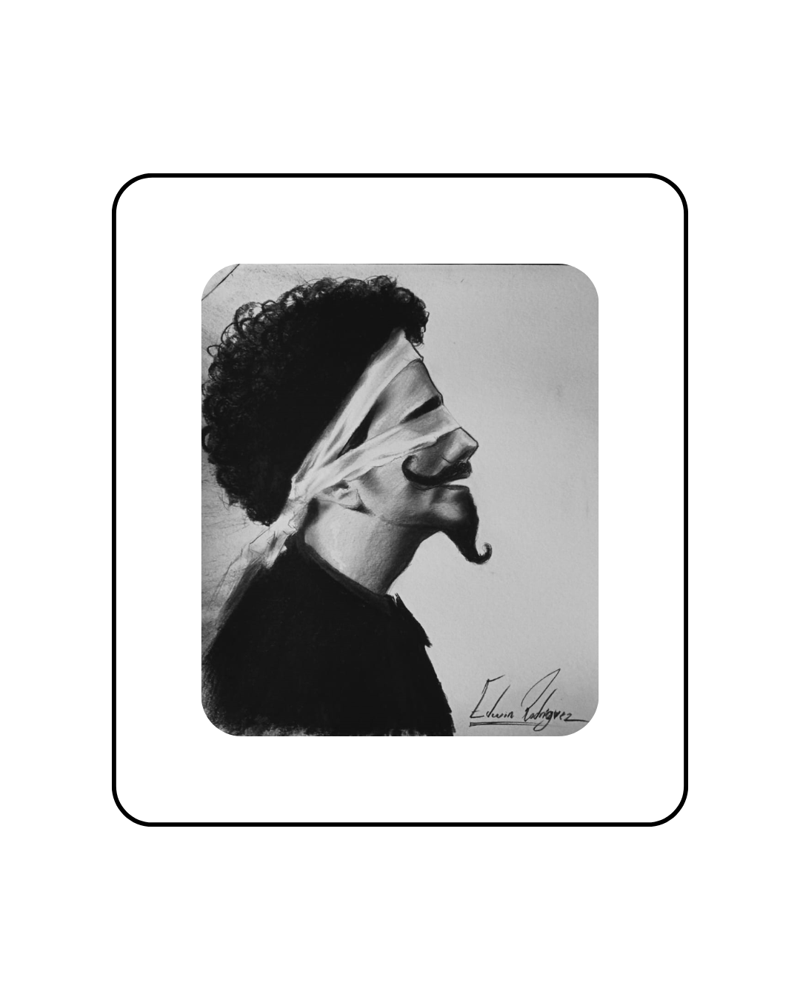
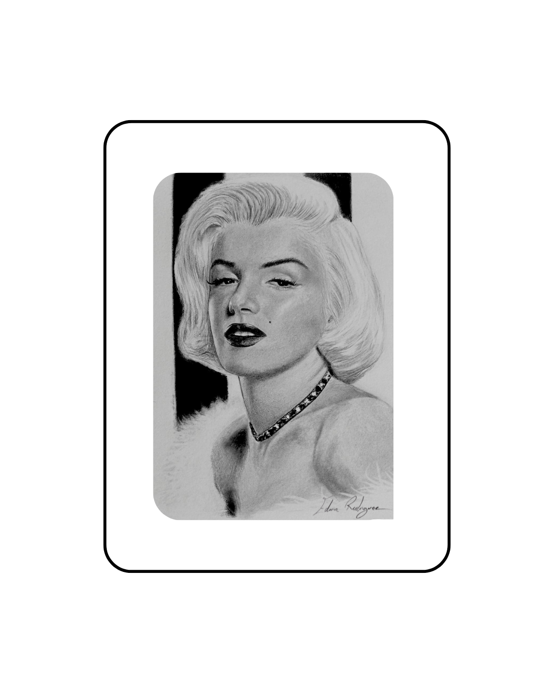
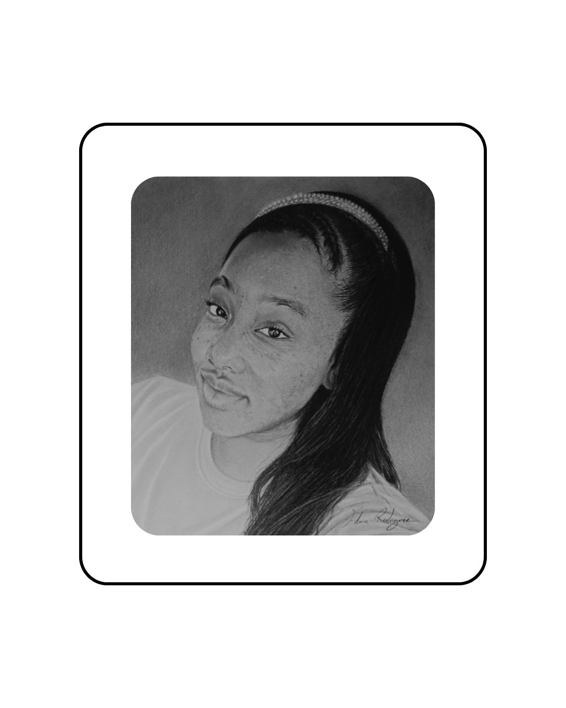
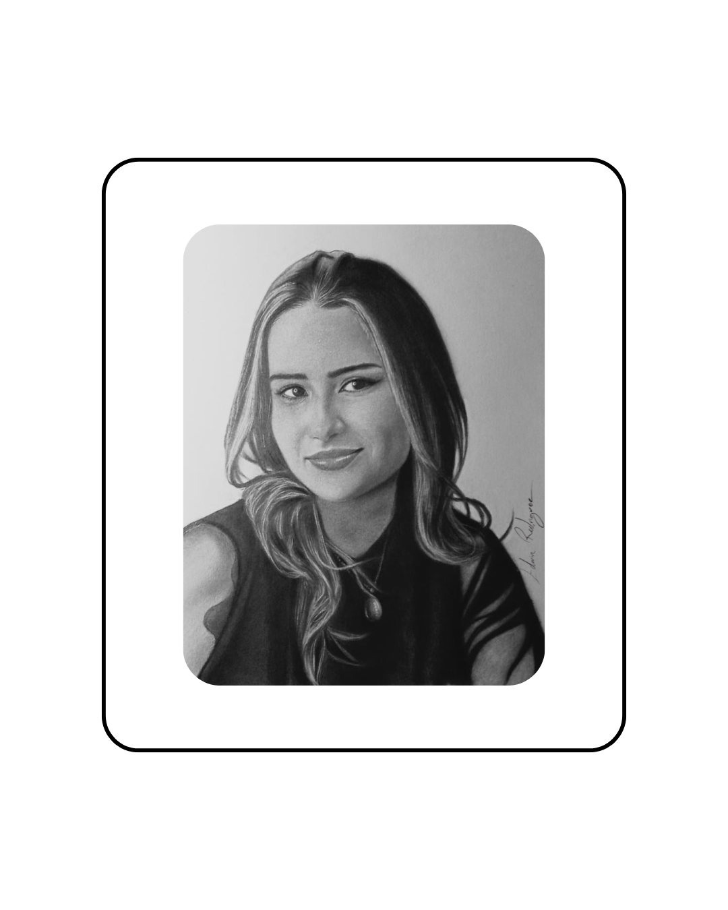

Especialista en dibujo realista. Transformo fotografías y conceptos en piezas de arte con un nivel de detalle excepcional, utilizando únicamente la escala de grises.

Grafito sobre papel - Estudio de luz.

Grafito sobre papel - Técnica de texturizado.

Grafito de alto contraste - Obra conceptual.

Grafito fotorrealista - Retrato de icono.

Grafito sobre papel - Detalle en texturas.

Grafito - Retrato personalizado.
Creación de retratos fotorrealistas a partir de fotografías. Ideal para regalos únicos y piezas de colección.
Obras originales y fotorrealismo de autor en formato medio y grande.
Colaboraciones y asesoría técnica para proyectos que requieran el dominio del claroscuro.
Para cotizaciones de retratos personalizados o consultas sobre mi obra disponible.
Enviar un mensaje